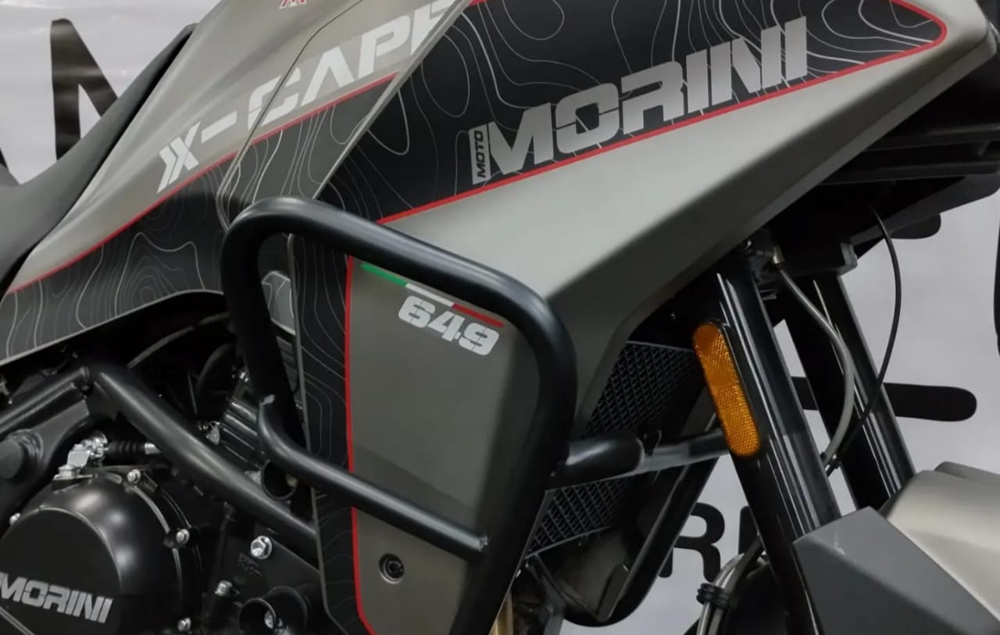
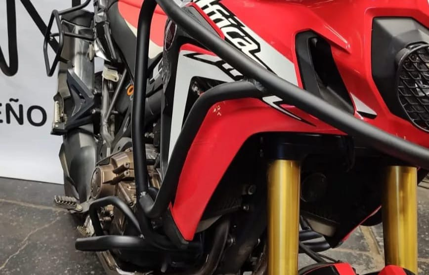
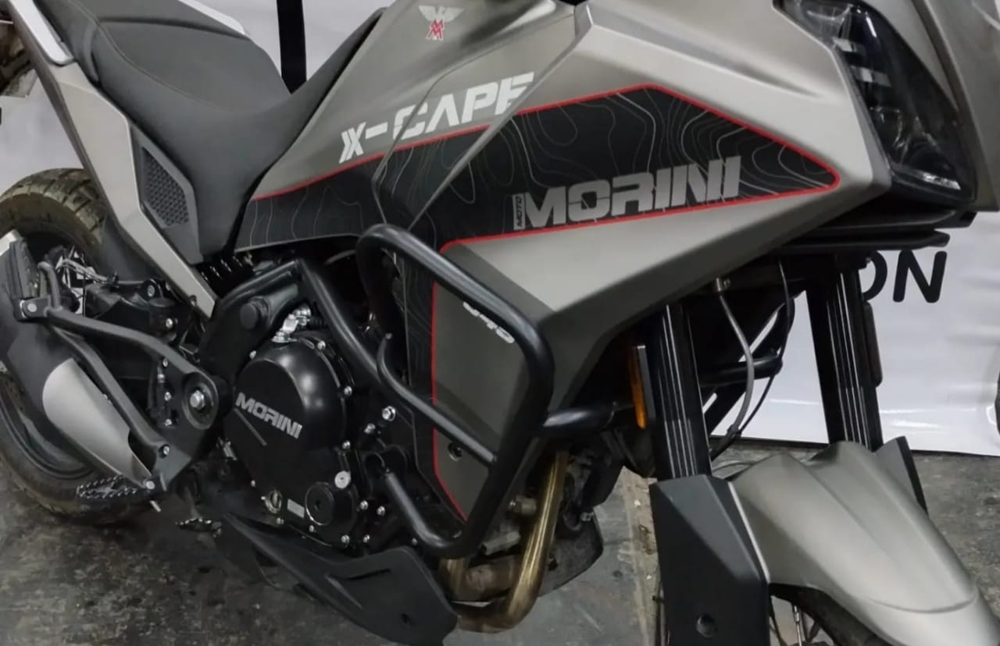

Andreu DC
inicio
contactanos
instagram
facebook
+ mas
protecciones de motos
accesorios de motos
página creada por:
TECNO.LG



Previous
Next
Bienvenidos a Andreu
Andreu DC concentra sus actividades en el diseño y construcción de protecciones y accesorios para motos de todo tipo
Andreu DC, se especializa en el diseño y la fabricación de accesorios y protecciones de alta calidad para motocicletas de manera artesanal. Su compromiso con la excelencia se manifiesta en su capacidad para maximizar el potencial de cada motocicleta, proporcionando soluciones que van más allá de la mera funcionalidad.
lo que distingue a Andreu DC es su enfoque meticuloso en la personalización. Cada uno de sus productos está diseñado teniendo en cuenta las necesidades y los gustos individuales de los motociclistas. Ya sea un amante de los viajes que busca mejorar el rendimiento o un entusiasta de la estética que busca resaltar el aspecto de su motocicleta, Andreu DC ofrece una amplia gama de opciones para satisfacer todos los deseos y requisitos.
La estética y la funcionalidad son dos pilares fundamentales en la filosofía de Andreu DC. Sus accesorios no solo mejoran el aspecto de la motocicleta, sino que también la protegen de manera efectiva. Además, su compromiso con la no modificación del vehículo garantiza que los clientes puedan disfrutar de estas mejoras sin comprometer la integridad y el rendimiento originales de su motocicleta.
En resumen, Andreu DC no solo se destaca por su excelencia en la fabricación de accesorios para motocicletas, sino que también se compromete a ofrecer soluciones personalizadas que satisfagan las demandas de cada motociclista. Su enfoque en la estética, la funcionalidad y la integridad de la motocicleta hace que sean una elección destacada en la industria.